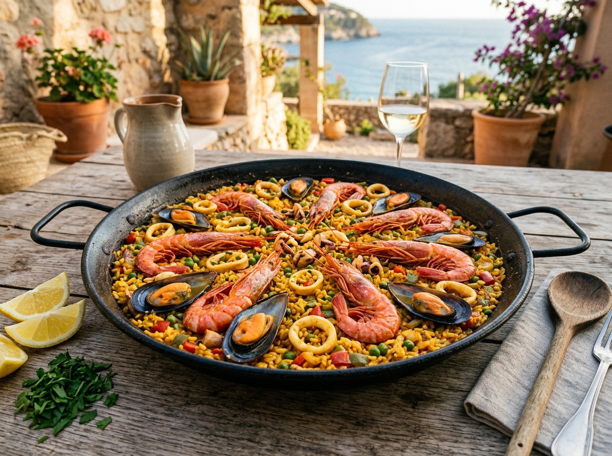

Lesson Carousel
Click any dish to inspect:
1 / 8

🥘
Balearic Classic
Ready to test yourself?
Switch to quiz mode for this dish.
⚠️
Restaurant Allergy Alert:
Shellfish (Crustaceans & Molluscs). Cook separately for allergic guests.
English Culinary Name
Seafood Paella
Español: Paella de Marisco
/ˈsiː.fuːd paɪˈel.ə/
🧄 Key Ingredients in English (Click any to hear audio):
🔊 Interactive🔥 Cooking Verbs & Kitchen Technique:
🗣️
How Claudia Explains This to English-Speaking Guests:
💬
Real Guest Questions & Claudia's English Answers:
Round 1 of 8
🍽️
Chef's Service
Look at the photo:
What is this dish called in English?
Select the correct English culinary name:
Table Pitch for English-Speaking Guests:
🏆
Game Completed • ¡Felicidades!
Outstanding, Chef Claudia!
You've mastered the English names, ingredients, and guest descriptions for Mallorca's top dishes.
Final Score
0 / 800
Chef Rank
Executive Chef 🌟